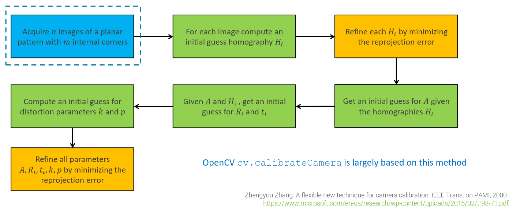
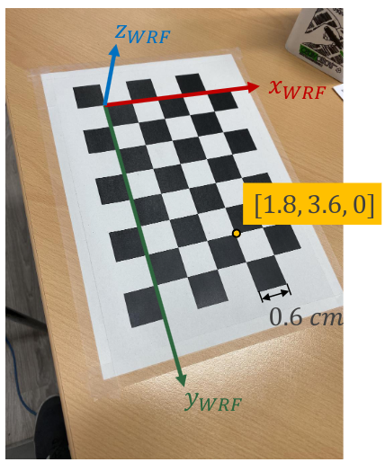
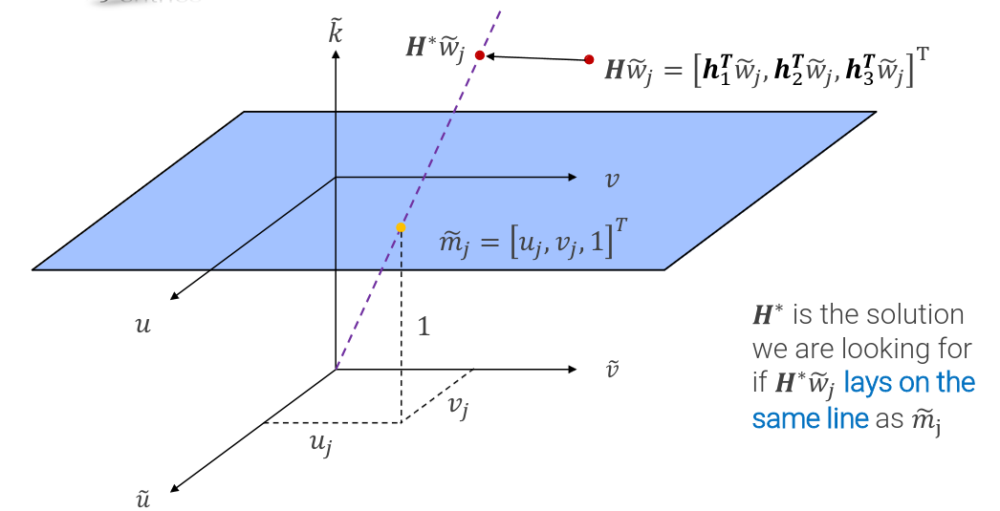
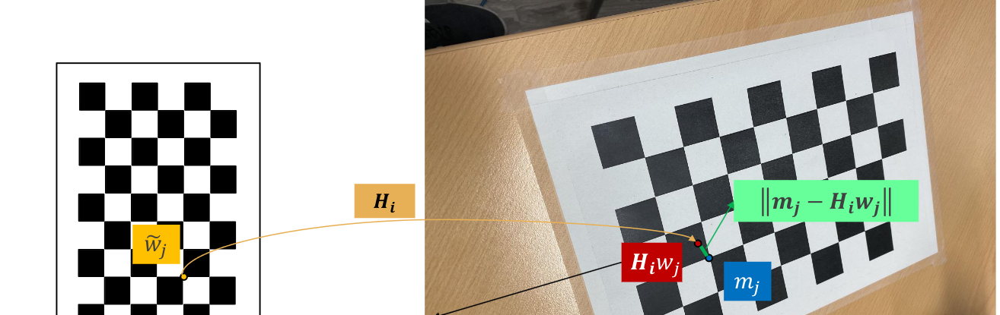

We need to estimate the parameters for the PPM
model (+distortion coefficients). Which can be decomposed into 3 independent elements:
A: intrinsic parameter matrix
R: rotation matrix
t: translation vector
Camera calibration approaches can be split into two main categories:
hose relying on a single image of a 3D calibration object
Those relying on several (at least 3) different images of one given planar pattern
In practice, it is difficult to build accurate targets containing multiple planes, while an accurate planar target can be attained rather easily
Zhang’s Method
It is a process to obtain the camera's parameter. It can be described as follows:

Acquire n images of a planar pattern with m internal corner
Given a chessboard pattern, we know:
The number of internal corners of the pattern, usually odd along one dimension and even along the other to remove rotation ambiguities.
The size of the squares that form the pattern (in mm, cm...)
Thus, the World Reference Frame can be conveniently defined by choosing a reference point as the origin and compute the position of every other point as a consequence.

Depending on the image, we need to compute different WRFs.
For each image compute an initial guess homography 𝐻
Due to the choice of the WRF associated with calibration images, in each of them we consider only 3D points with z = 0. Accordingly, the PPM for points on the pattern can be simplified to a 3x3 matrix:
km~=kuv1=PM~W=P11P21P31P12P22P32___P14P24P34xy01=Hw~
with H a homography.
Given the image of a pattern with 𝑚 corners, we can write 3 linear equations for each corner j where:
3D coordinates are known due to the WRF definition
2D coordinates are known due to corners having been detected in the i-th image the unknowns are the 9 elements in H
Stacking 3m such equations for the 𝑚 corners, we get a system of equations.
The solution can be found by searching a point in where to move the 9 points. 
Two points lay on the same line if their cross product
is the zero vector.
m~j≡Hw~j⇒m~j×Hw~j=0⇒m~j×Hw~j=uivi1×h1TW~jh2TW~jh3TW~j=vjh3TW~j−h2TW~jh1TW~j−ujh3TW~jujh2TW~j−vjh1TW~j=000⇒hiTW~j=W~jThi⇒0TW~jT−vjW~jT−W~jT0TujW~jTvjW~jT−ujW~jT0th1h2h3=000⇒[0TW~jT−W~jT0TvjW~jT−ujW~jT]h1h2h3=[00]
Where the matrix on the second line is a 3x9 matrix, the h values are vectors of size 3x1 and the matrix on the third row is the second one where the last row can be removed because linearly dependent from the others (multiply first one by −𝑢 and second one by −𝑣, then sum them)
The solution can be found as:
03×1TW~1T⋮03×1TW~mT−W~1T03×1T⋮−W~mT03×1Tv1W~1T−u1W~1T⋮vmW~mT−umW~mTh1h2h3=02m×1⇒Lh≡0
The solution h* is found by minimizing the norm of the vector h:
h∗=argminh∈R9∣∣Lh∣∣
and the solution can be found by using the SVD
decomposition.
Refine each Hi by minimizing the re-projection error
The initial guess of the homography won't be perfect due to all the needed approximation, so, we need to find a better approximation starting from the original one.

We can refine it by using some Iterative algorithms
like Levenberg-Marquardt algorithm and optimizing the formula:
Hi∗=argminHi∑j=1m∣∣mj−Hiwj∣∣2i=1,…,m, where Hiwj=h3Twj~h1Twj~h3Twj~h2Twj~.
This additional optimization step corresponds to the minimization of the re-projection error (typically referred to as geometric error) measured for each of the 3D corners of the pattern by comparing the pixel coordinates predicted by the estimated homography to the pixel coordinates of the corresponding corner extracted in the image. The error minimized to estimate the initial guess when solving the linear system is instead referred to as algebraic error or distance. Solutions based on minimization of the algebraic error may not be aligned with our intuition, yet there exist a unique solution, which is cheap to compute. Hence, they are a good starting point for a geometric, non-linear minimization, which effectively minimize the distance we care about.
Get an initial guess for 𝐴 given the homographies Hi
All the images acquired for calibration share the same intrinsic parameters.
Pi≡A[Ri∣ti]=A[ri1ri2ri3ti]⇒Hi=[hi1hi2hi3]=[kAri1kAri2kAti]⇒kri1=A−1hi1,kri2=A−1hi2
Since the column vector of each Ri are orthonormal
we get:
<ri1,ri2>=0⇒<A−1hi1,A−1hi2>=0⇒hi1TA−TA−1hi2=0<ri1,ri1>=<ri2,ri2>⇒<A−1hi1,A−1hi1>=<A−1hi2,A−1hi2>⇒hi1TA−TA−1hi1=hi2TA−TA−1hi2
By stacking these two constraints for each image, we get a homogeneous system of equations which can be solved again by SVD
if n≥3 images are collected (with 6 unknown variables)
Given A and Hi, get an initial guess for Ri and ti
Once A has been estimated, it is possible to compute Ri and ti given A and the previously computed homography Hi:
Hi=[hi1hi2hi3]=[kAri1kAri2kAti]⇒ri1=k1A−1hi1
Since ri1 is a unit vector we can pose the normalization constant as k=∣∣A−1hi1∣∣. Then, the same constant can be used to computeri2=frac1kA−1hi2 and ri2=frac1kA−1hi3, finally, since Ri is Orthonormal
, we can pose ri3=ri1×ri2. Yet, the resulting matrix will not be exactly orthonormal since ri1 and ri2 are not necessarily orthogonal and ri2 does not necessarily have unit length since k was computed for ri1. We can still use SVD
to compute the closest orthonormal matrix by substituting D with I.
Compute an initial guess for distortion parameters k and p
We also need to consider the Lenses
distortion, which has been ignored up to now. Original Zhang’s method deploys such information to estimate coefficients 𝑘1, 𝑘2 of the radial distortion function:
[xy]=L(r)[xundistyundist]=1(k1r2+k2r4)[xundistyundist]
We can apply the same transformation used for the original lenses model, and we'll get:
[fuu−u0fvv−v0]=(1+k1r2+k2r4)[fuuundist−u0fvvundist−v0]⇒[u−u0v−v0]=(1+k1r2+k2r4)[uundist−u0vundist−v0]⇒[u−u0v−v0]−[uundist−u0vundist−v0]=1(k1r2+k2r4)[uundist−u0vundist−v0]⇒[u−uundistv−vundist]=[(uundist−u0)r2(vundist−v0)r2(uundist−u0)r4(vundist−v0)r4][k1k2]
We get a linear, non-homogeneous system of linear equations Dk=d in the unknowns k=[k1k2]2.
We get 2nm (n images, m corners) equations in 2 unknowns, which can be solved in a least square sense, minimizing ∣∣Dk−d∣∣2, by computing the pseudo-inverse matrix DT as:
k∗=kmin∣∣Dk−d∣∣2=DTd=(DTD)−1DTd
Refine all parameters by minimizing the reprojection error
Final non-linear refinement of the estimated parameters. As for homographies, the procedure highlighted so far seeks to minimize an algebraic error, without any real physical meaning. A more accurate solution can instead be found by a so-called Maximum likelihood estimation
aimed at minimization of the geometric (i.e. reprojection) error. We use all the values estimated so far as initial guesses.